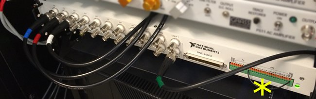

EPOCS hardware setup
EPOCS assumes you have a National Instruments X-series data acquisition card, such as the
PCIe 6321, installed in your PC,
and that you have installed the NI software and drivers (including NIDAQmx version 8.5 or later).
By default, EPOCS will assume that the card is named Dev1 (verify this using the NIMAX program).
In addition to the PCIe card, you will need the following National Instruments products:
- BNC-2090A rack-mountable connector block, or similar (see photo below)
- SHC68-68-EPM cable (1m) to connect the PCIe card to the connnector block
The connector block is used as follows:

- Blue-labelled BNC cable: amplified EMG signal #1 (agonist muscle), connected to port AI0 (may be called ACH0 on older models)
- Red-labelled BNC cable: amplified EMG signal #2 (antagonist muscle), connected to port AI1 (may be called ACH1 on older models)
- White-labelled BNC cable: trigger copy, connected to port AI2 (may be called ACH2 on older models). The other end of this cable is attached
using a BNC tee piece to the green-labelled cable.
- Green-labelled BNC cable: trigger output, connected to port USER2. The other end of this cable is connected via the BNC tee connector to
- the white-labelled cable in AI2,
- the stimulator (if using a Grass S48 stimulator, connect to the "-- SYNC IN -- STIM. DELAY" port), and
- any other optional equipment, such as an oscilloscope, that needs to know about trigger timing.
- Yellow asterisk (*): this simple wire connects
the custom spring terminal marked P07 (may be called DIO7 on older models) with the one marked USER2. This is necessary so that
the BNC port marked USER2 can output the trigger voltage, to be carried by the green-labelled BNC cable.